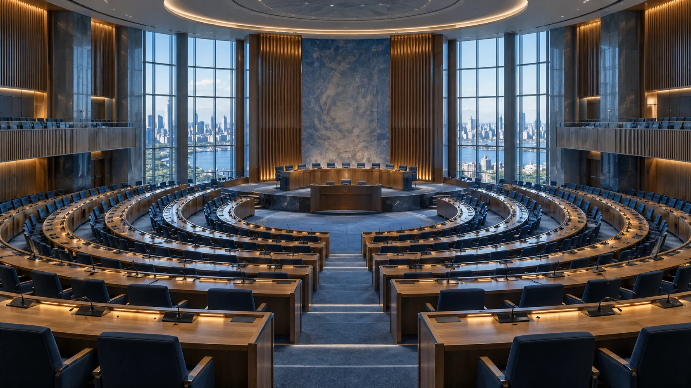

АЛМАТЫ · ШКОЛЬНАЯ МОДЕЛЬ ООН
Разные взгляды.
Общее будущее.
Примерь роль дипломата. Найди союзников.
Предложи решение,
которое услышат.

OF DIPLOMACY01 / SCHOOL MUN
01 / ТОЧКА ВСТРЕЧИ
Большие вопросы.
Твой голос в решении.
Модель ООН — конференция, где ты представляешь страну, а не только своё мнение. Вместе с другими делегатами исследуешь мировые проблемы, участвуешь в дебатах и создаёшь резолюции.
02 / ВЫБЕРИ СВОЁ НАПРАВЛЕНИЕ
За каким столом будешь ты?
От глобального здоровья до международной безопасности.
Найди
тему, о которой тебе действительно хочется говорить.
Пока нет такого сочетания
Выбери другой язык или уровень подготовки.
03 / ДО ПЕРВОГО ВЫСТУПЛЕНИЯ
Приходи с идеями.
Остальное подготовим.
Сохрани личный прогресс подготовки.
Отметки останутся в этом
браузере.
04 / ПЕРЕД СТАРТОМ
Есть вопрос?
Самое важное для будущего делегата.
Можно участвовать без опыта?
Да. Начни с комитета уровня «Для новичков». Изучи повестку, подготовь короткую речь и уточни правила у президиума. Не нужно быть профессиональным оратором.
Обязательно говорить на английском?
Нет. Здесь представлены комитеты на русском, английском и казахском языках. Рабочий язык указан на каждой карточке.
Как выбрать страну?
Страну обычно распределяют организаторы после регистрации. До получения назначения можно изучать общую повестку, но позицию страны нужно готовить уже после распределения.
Когда конференция и как зарегистрироваться?
Даты, место проведения и официальную ссылку на регистрацию опубликует школа после утверждения программы. Пока можно выбрать комитет и начать подготовку.
Какие правила действуют на дебатах?
Уважай участников, следуй указаниям председателя и обсуждай позиции государств без личных нападок. Конкретный регламент и требования к одежде нужно уточнить у организаторов.
МЕСТО ДЛЯ ТВОЕЙ ТОЧКИ ЗРЕНИЯ